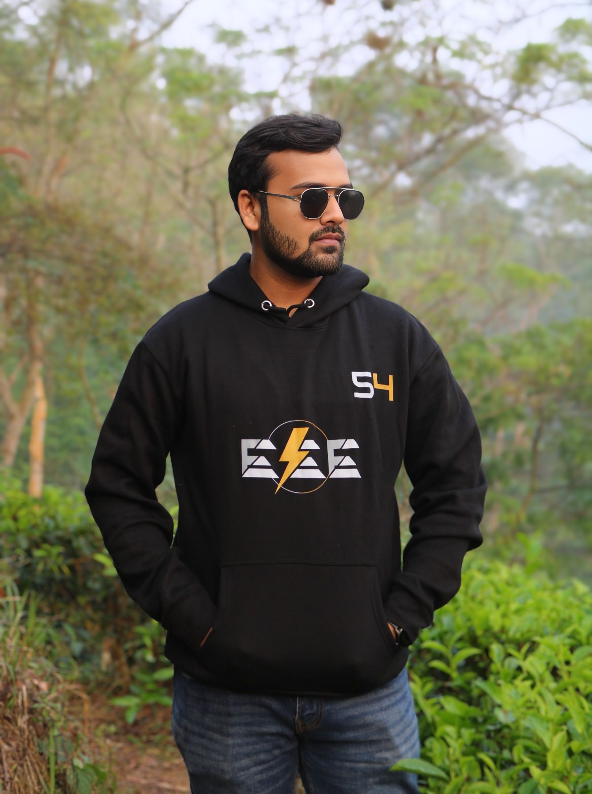
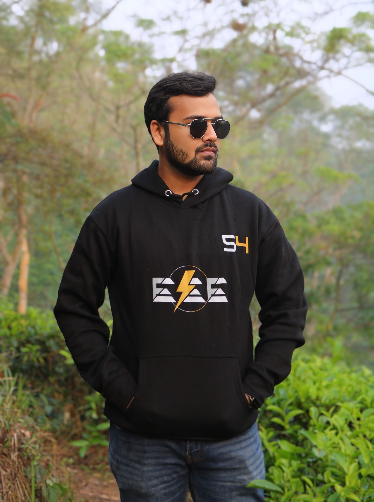
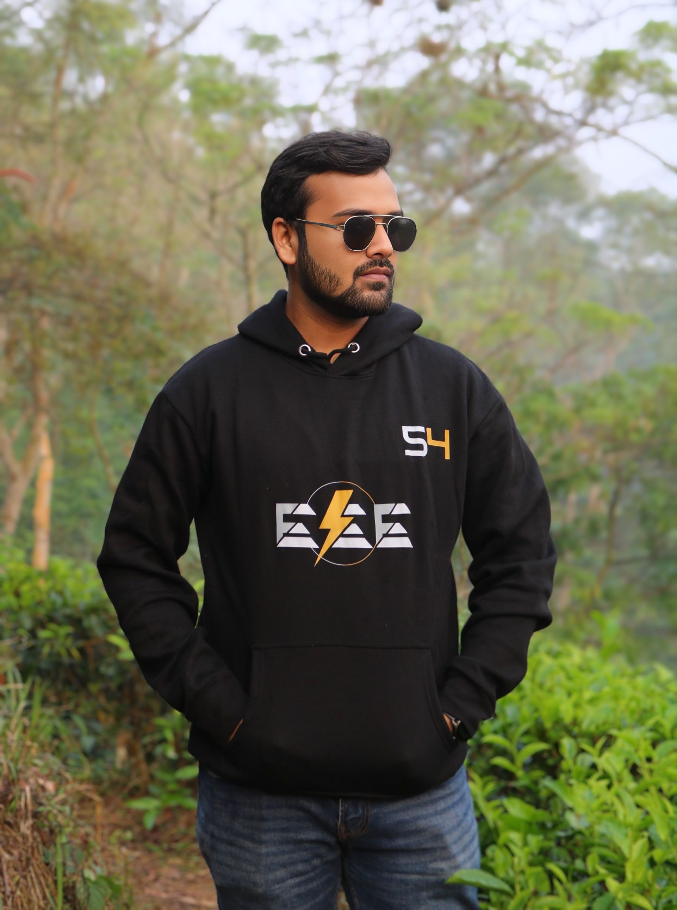

Photo Gallery
 



Student | DU EEE | Learner

Hello there, I am Arko Mustafi , an undergraduate student at Department of Electrical and Electronic Engineering, University of Dhaka. Currently, I am working as Treasurer, IEEE Student Branch, University of Dhaka. I love to code. Though, I'm a beginner level programmer but I am trying to develop my problem solving skill. I have learned html, CSS, Java script and Bootstrap up-to intermediate level. I have also completed an internship offered by Grameenphone. And always be open to learning from everything. I love volunteering. I am currently working as a volunteer at the IEEE Puzzlers Community. Previously, I was PES Day volunteer, IEEE Day volunteer too. I am also serving my duty to mankind as a member of Dhaka University Rover Scout Group. Besides my academic and professional life, I love to read books, travel, meet with new people and being a better person day by day. Feel free to knock me if you want to learn more.
1. Treasurer, IEEE Student Branch, University of Dhaka
2. Puzzle Maker & Mentor, IEEE Puzzlers
3. Internship at GP Explorer 2.0
4. Former Senior Rover Mate, DURSG
5. Volunteer, Fab Lab DU
1. IoT Based Smart Agriculture System
1. 6G Development and Expansion